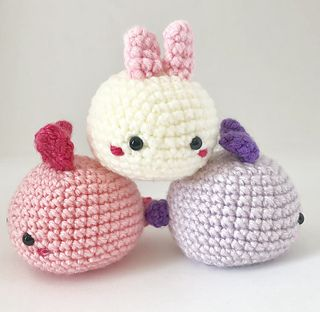
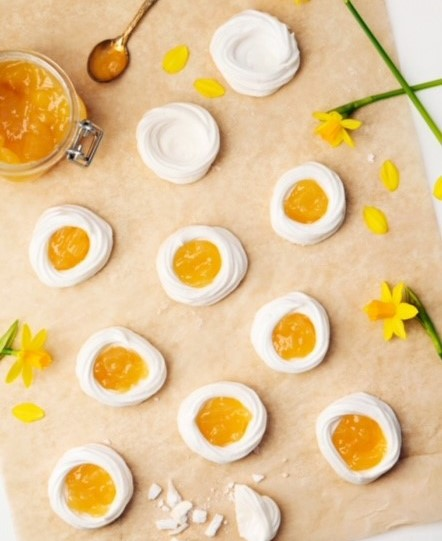
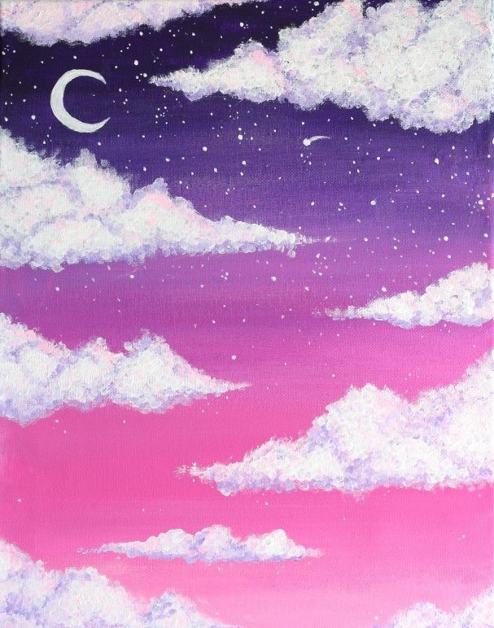

A little about me
Ever since I was little I've always loved creating art and working with my hands.
Drawing, making music, writing, crochet, puzzles...
I love to continiously learn new things,
to see the fun side of things
and every task I'll come across.
Therefor I can reasure that the creations you will recieve from me
will come with a 100% passion from my side.


